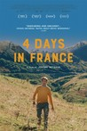
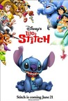
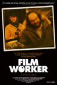
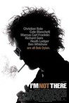
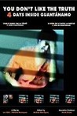
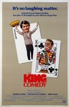
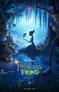

Movie Releases By Score
|  |
2401.
4 Days in France
Release Date:
August 4, 2017
On a seemingly ordinary night in Paris, Pierre takes one last look his lover Paul’s sleeping body, then steals away into the early morning light. Where he’s headed, neither of them know. Pierre’s only guide is his Grindr app, which leads him on a series of encounters with an indelible cast of characters across the French countryside. Paul sets out after him, using his own phone to track Pierre’s movements in a strange and wonderful game of Grindr cat-and-mouse.
|

|
2402.
Into the Wild
Release Date:
September 21, 2007

Freshly graduated from college and with a promising future ahead, 22-year-old Christopher McCandless chose instead to walk out of his privileged life and into the wild in search of adventure. What happened to him on the way transformed this young wanderer into an enduring symbol for countless people. Was Christopher McCandless a heroic adventurer or a naïve idealist, a rebellious 1990s Thoreau or another lost American son, a fearless risk-taker or a tragic figure who wrestled with the precarious balance between man and nature? (Paramount Vantage)
|
2403.
Rumble: The Indians Who Rocked The World
Release Date:
July 26, 2017
This revelatory documentary brings to light the profound and overlooked influence of Indigenous people on popular music in North America. Focusing on music icons like Link Wray, Jimi Hendrix, Buffy Sainte-Marie, Charley Patton, Mildred Bailey, Jesse Ed Davis, Robbie Robertson, and Randy Castillo, Rumble: The Indians Who Rocked The World shows how these pioneering Native American musicians helped shape the soundtracks of our lives. [Kino Lorber]
|
|

|
2404.
The Party
Release Date:
February 16, 2018
Janet (Kristin Scott Thomas) is hosting an intimate gathering of friends in her London home to celebrate her political ascension, while her husband, Bill (Timothy Spall), seems preoccupied. Janet’s acerbic best friend, April (Patricia Clarkson), arrives and others follow, some with their own dramatic news to share, but an announcement by Bill provokes a series of revelations that gradually unravel the sophisticated soiree, and a night that began with champagne may end with gunplay.
|
2405.
A Scanner Darkly
Release Date:
July 7, 2006
Based on legendary science-fiction author Philip K. Dick’s own experiences, A Scanner Darkly tells the darkly comedic, caustic, but deeply tragic tale of drug use in the modern world. The film plays like a graphic novel come to life with live-action photography overlaid with an advanced animation process -- a method known as interpolated rotoscoping, first employed in writer/director Richard Linklater’s 2001 film "Waking Life" -- to create a haunting version of America, seven years from now. (Warner Independent Pictures)
|
|

|
2406.
Cropsey
Release Date:
June 4, 2010
Realizing the urban legend of their youth has actually come true, two filmmakers delve into the mystery behind five missing children and the real-life boogeyman linked to their disappearance in their hometown of Staten Island, New York. (Cinema Purgatorio)
|

|
2407.
The House of the Devil
Release Date:
October 30, 2009
Sam is a pretty college sophomore, so desperate to earn some cash for a deposit on an apartment that she accepts a babysitting job even after she finds out there is no baby. Mr. and Mrs. Ulman are the older couple who lure Sam out to their creeky Victorian mansion deep in the woods, just in time for a total lunar eclipse. Megan is Sam’s best friend, who gives her a ride out to the house, and reluctantly leaves her there despite suspecting that something is amiss. Victor at first seems like just a creepy guy lurking around the house, but quickly makes it clear that Sam will end this night in a bloody fight for her life. (Magnolia Pictures)
|

|
2408.
Red Cliff
Release Date:
November 18, 2009
Red Cliff opens as power hungry Prime Minister-turned-General Cao Cao seeks permission from the Han dynasty Emperor to organize a southward-bound mission designed to crush the two troublesome warlords who stand in his way, Liu Bei and Sun Quan. As the expedition gets underway, Cao Cao's troops rain destruction on Liu Bei's army, forcing him into retreat. Liu Bei's military strategist Zhuge Liang knows that the rebels’ only hope for survival is to form an alliance with rival warlord Sun Quan, and reaches out to Sun Quan’s trusted advisor, war hero Zhou Yu. Vastly outnumbered by Cao Cao’s brutal, fast-approaching army, the warlords band together to mount a heroic campaign – unrivaled in history – that changes the face of China forever. A massive hit in Asia and the most expensive Asian film production of all time, Red Cliff is a breathtaking war epic that marks the triumphant return of John Woo. (Magnolia Pictures)
|

|
2409.
Keep the Change
Release Date:
March 16, 2018
When aspiring filmmaker David (Brandon Polansky) is mandated by a judge to attend a social program at the Jewish Community Center, he is sure of one thing: he doesn’t belong there. But when he’s assigned to visit the Brooklyn Bridge with the vivacious Sarah (Samantha Elisofon), sparks fly and his convictions are tested. Their budding relationship must weather Sarah’s romantic past, David’s judgmental mother (Jessica Walter), and their own pre-conceptions of what love is supposed to look like.
|
2410.
Chisholm '72: Unbought & Unbossed
Release Date:
September 24, 2004
This is the first historical documentary on Brooklyn Congresswoman Shirley Chisholm and her campaign to become the Democratic Party's presidential nominee in 1972. (REALside Productions)
|
|

|
2411.
Tokyo Godfathers
Release Date:
January 16, 2004

Christmas. Snow is turning Tokyo into a white city. Somewhere in Shinjuku, there are three energetic homeless people: Gin (an alcoholic), Hana (an ex-drag queen) and Miyuki (a runaway girl). The holy night is about to witness a memorable encounter as they discover an abandoned baby girl in a pile of garbage bags. (Sony)
|

|
2412.
My Terrorist
Release Date:
June 25, 2003
This documentary asks hard questions about the meaning of forgiveness and hate, the inevitability of violence and, just possibly, about the chance of reconciliation between Palestinians and Israelis. (Women Make Movies)
|
|  |
2413.
Lilo & Stitch
Release Date:
June 21, 2002

In Lilo and Stitch, get ready to crash-land on Earth with Stitch, a runaway genetic experiment from a faraway planet. As he wreaks havoc on the Hawaiian Islands, he becomes the mischievous adopted alien "puppy" of an independent little girl named Lilo and learns about loyalty, friendship, and 'ohana, the Hawaiian tradition of family.
|

|
2414.
Behind the Sun
Release Date:
December 12, 2001
Set in the Brazilian badlands in 1910, Behind the Sun tells the story of two families locked in a generations-old deadly feud. It started out as a battle over land, but now it's escalated into a series of reprisals that is claiming the lives of the young men on both sides. (Miramax Films)
|

|
2415.
Cool and Crazy
Release Date:
October 19, 2001
A documentary about the lives and loves of the male voice choir in the small fishing village of Berlevag, Norway.
|

|
2416.
Show Me Love
Release Date:
October 22, 1999
In a small Swedish town, Elin (Dahlstrom) is a popular, pretty high school debutante, and Agnes (Liljeberg) is one of the least popular girls in school. On a dare, Elin kisses Agnes to see if Agnes really is a "lesbian" and her life is transformed. Elin discovers that she has been repressing something that was innately there all the time, and the two girls fall in love. [Sonet Films]
|

|
2417.
The Limey
Release Date:
October 8, 1999
Acclaimed director Steven Soderbergh's latest film follows the exploits of Wilson (Stamp), a tough English ex-con who travels to Los Angeles to avenge his daughter's death. (Artisan Entertainment)
|
2418.
El mariachi
Release Date:
February 26, 1993
In this action adventure film a lone Mariachi musician enters a small town at the same time as a hitman. They both wear black and carry similar guitar cases, except the Mariachi's contains his beloved guitar and the hitman's is full of weapons--as a result the Mariachi finds himself ushered into a violent underworld of crime. (Sony)
|
|

|
2419.
Rust and Bone
Release Date:
November 23, 2012
Put in charge of his young son, Ali leaves Belgium for Antibes to live with his sister and her husband as a family. Ali's bond with Stephanie, a killer whale trainer, grows deeper after Stephanie suffers a horrible accident.
|

|
2420.
The Rape of Recy Taylor
Release Date:
December 8, 2017
The Rape of Recy Taylor is the epic story of sexual violence in Jim Crow South. It is the little-known story of courageous black women who waged war to take back their bodies and their dignity, and whose vocal protests helped inspire the Civil Rights Movement 10 years later. Boldly speaking up against her rapists and putting her life and that of her family’s in grave danger, Recy Taylor attracted the attention of the NAACP and their chief investigator Rosa Parks. Parks, commonly believed to be a tired seamstress who refused to give up her seat on the bus in 1955 triggering the Montgomery Bus Boycott, was, in fact, an activist, working for years to undo years of criminal rapes and physical abuse against black women.
|

|
2421.
Eye in the Sky
Release Date:
March 11, 2016
Through remote surveillance and on-the-ground intel, Colonel Katherine Powell (Helen Mirren), a UK-based military officer in command of a top secret drone operation to capture terrorists in Kenya discovers the targets are planning a suicide bombing and the mission escalates from “capture” to “kill.” But as American pilot Steve Watts (Aaron Paul) is about to engage, a nine-year old girl enters the kill zone triggering an international dispute, reaching the highest levels of US and British government, over the moral, political, and personal implications of modern warfare.
|
2422.
Kiki
Release Date:
February 24, 2017
In New York City, LGBTQ youth-of-color gather out on the Christopher Street Pier, practicing a performance-based artform, Ballroom, which was made famous in the early 1990s by Madonna’s music video “Vogue” and the documentary “Paris Is Burning.” Twenty-five years after these cultural touchstones, a new and very different generation of LGBTQ youth have formed an artistic activist subculture, named the Kiki Scene. Kiki follows seven characters from the Kiki community over the course of four years, using their preparations and spectacular performances at events known as Kiki balls as a framing device while delving into their battles with homelessness, illness and prejudice as well as their gains towards political influence and the conquering of affirming gender-expressions.
|
|

|
2423.
Down in the Delta
Release Date:
December 25, 1998
Rosa Lynn sends her druggie daughter Loretta and her children Thomas and Tracy away from the big city to live with their uncle Earl in the ancestral home in rural Mississippi. Earl puts Loretta to work in his restaurant, Just Chicken, while also telling them about the generations of their family, the Sinclairs, dating back to their time in slavery before the the Civil War.
|
2424.
Frantz
Release Date:
March 15, 2017
Set in Germany and France in the immediate aftermath of the First World War, (1914-1918), Frantz recalls the mourning period that follows great national tragedies as seen through the eyes of the war’s “lost generation”: Anna (Paula Beer), a bereft young German woman whose fiancé, Frantz, was killed during trench warfare, and Adrien (Pierre Niney), a French veteran of the war who shows up mysteriously in her town, placing flowers on Frantz’s grave. Adrien's presence is met with resistance by the small community still reeling from Germany’s defeat, yet Anna gradually gets closer to the handsome and melancholy young man, as she learns of his deep friendship with Frantz, conjured up in evocative flashbacks. [Music Box Films]
|
|

|
2425.
All About Lily Chou-Chou
Release Date:
July 12, 2002
An epic story of a Japanese teenager's life in the age of the Internet.
|

|
2426.
Wordplay
Release Date:
June 16, 2006
Wordplay focuses on the man most associated with crossword puzzles, New York Times puzzle editor and NPR Puzzle Master Will Shortz. Director Patrick Creadon introduces us to this passionate hero, as well as to the inner workings of his brilliant and often hilarious contributors and many celebrity crossword puzzlers. (IFC Films)
|
2427.
Like Father, Like Son
Release Date:
January 17, 2014
The "switched at birth" urban legend and the Nature vs. Nurture debate provide Hirokazu Kore-eda with a fresh opportunity to revisit his ongoing preoccupation with family dynamics and parent-child relationships in contemporary Japan. The life of go-getting workaholic architect Ryota (Masaharu Fukuyama)—one of comfort and quietly ordered affluence with his wife Midori (Ono Machiko) and son Keita (Keita Ninomiya)—is violently overturned when hospital administrators reveal the unthinkable: Keita is not his biological son. Due to a mistake made by a negligent nurse, his "true" son has been raised in the dishevelled but warm-hearted home of working-class shopkeeper Yudai (Lily Franky) and his wife (Yôko Maki). The different approaches of both couples to their excruciating dilemma and the gradual emotional awakening of the all-too-rational Ryota are at the core of this sensitive drama of family feeling, which showcases Kore-eda’s rich sense of humanity. [IFC Films]
|
|
2428.
Most Beautiful Island
Release Date:
November 3, 2017
Most Beautiful Island chronicles one harrowing day in the life of Luciana (Ana Asensio), a young immigrant woman struggling to make ends meet while striving to escape her past. As Luciana's day unfolds, she is whisked, physically and emotionally, through a series of troublesome and unforeseeable extremes. Before her day is done, she inadvertently finds herself a central participant in a cruel game where lives are placed at risk, and psyches are twisted and broken for the perverse entertainment of a privileged few.
|
|
|  |
2429.
Filmworker
Release Date:
May 11, 2018
It's a rare person who would give up fame and fortune to toil in obscurity for someone else's creative vision. Yet, that's exactly what Leon Vitali did after his acclaimed performance as 'Lord Bullingdon" in Stanley Kubrick's Barry Lyndon. The young actor surrendered his thriving career to become Kubrick's loyal right-hand man. For more than two decades, Leon played a crucial role behind-the-scenes helping Kubrick make and maintain his legendary body of work. In Filmworker, Leon's candid, often funny, sometimes shocking experiences in the company of Kubrick are woven together with rich and varied elements including previously unseen photos, videos, letters, notebooks, and memos from Leon's private collection. Insightful, emotionally charged anecdotes from actors, family, crew members, and key film industry professionals who worked with Kubrick and Leon add an important layer of detail and impact to the story. Filmworker enters the world of Leon Vitali and Stanley Kubrick from a unique perspective that highlights the nitty-gritty of the creative process. By experiencing Leon's journey we come to understand how the mundane gives rise to the magnificent as timeless filmmaking is brought to life at its most practical and profound level.
|

|
2430.
Queen of Katwe
Release Date:
September 23, 2016
A young girl from Uganda trains to become a world chess champion.
|

|
2431.
Werewolf
Release Date:
March 1, 2018
Blaise and Nessa are outcast methadone users in their small town. Each day they push a rusty lawnmower door-to-door begging to cut grass. Nessa plots an escape, while Blaise lingers closer to collapse. Tethered to one another, their getaway dreams are kept on a suffocatingly short leash.
|
2432.
Pop Aye
Release Date:
June 28, 2017
A successful Bangkok architect in the midst of a midlife crisis is reunited with an elephant he knew growing up. The two embark on a road trip to the man's childhood home in the idyllic Thai countryside. Along the way, they meet a colorful cast of characters that includes a pair of nonplussed local police officers, a forlorn transgender sex worker, and a mysteriously wise drifter. [Kino Lorber]
|
|

|
2433.
Time
Release Date:
July 13, 2007
Attractive Seh-hee is having problems with her boyfriend, Ji-woo. After two years, their love has entered a period of weariness. Though faithful to his fiancée, Ji-woo eyes other women and, in bed, seems to get excited only at the thought of making love to other partners. Seh-hee can't cope with the mounting jealousy tainting her life and decides to dramatically change her look - to become a new woman, with whom her boyfriend can again fall in love. She enters a plastic-surgery clinic and then vanishes for six months - long enough for the scars to heal - leaving Ji-woo hurt and confused by her disappearance. Resurfacing as the new waitress at the coffee shop Ji-woo frequents, Seh-hee - now calling herself See-hee - tries to seduce him. But between them stands the spectre of Ji-woo's lost girlfriend, with whom he is still very much in love. Jealousy once again creeps into the shaky existence Seh-hee has artificially crafted. Director Kim's unpredictable genius takes a fashionable issue to extremes in order to probe the dark, jealous core of a relationship gone wrong. (LifeSize Entertainment)
|
2434.
A Field in England
Release Date:
February 7, 2014
During the Civil War in 17th-Century England, a small group of deserters flee from a raging battle through an overgrown field. They are captured by an alchemist (Michael Smiley), who forces the group to aid him in his search to find a hidden treasure that he believes is buried in the field. Crossing a vast mushroom circle, which provides their first meal, the group quickly descend into a chaos of arguments, fighting and paranoia, and, as it becomes clear that the treasure might be something other than gold, they slowly become victim to the terrifying energies trapped inside the field.
|
|
|  |
2435.
I'm Not There.
Release Date:
November 21, 2007
I'm Not There is a film that dramatizes the life and music of Bob Dylan as a series of shifting personae, each performed by a different actor—poet, prophet, outlaw, fake, star of electricity, rock and roll, martyr born-again Christian—seven identities braided together, seven organs pumping through one life story, as dense and vibrant as the era it inspired. (The Weinstein Company)
|
|  |
2436.
You Don't Like the Truth: 4 Days Inside Guantanamo
Release Date:
September 30, 2011
This encounter between a team of Canadian intelligence agents and a child detainee in Guantánamo has never before been seen. Based on seven hours of video footage recently declassified by the Canadian courts this documentary delves into the unfolding high-stakes game of cat and mouse between captor and captive over a four day period. Maintaining the surveillance camera style this film analyzes the political, legal and scientific aspects of a forced dialogue. (Films Transit International)
|

|
2437.
The Proposition
Release Date:
May 5, 2006
Set against the harsh and unforgiving landscape of the 1880s Australian outback, The Proposition is a visually stunning tale of loyalty, revenge and the quest for justice in a land without rule. (First Look Pictures Releasing)
|

|
2438.
The Bourne Supremacy
Release Date:
July 23, 2004
The Bourne Supremacy re-enters the shadowy world of expert assassin Jason Bourne (Damon), who continues to find himself plagued by splintered nightmares from his former life. The stakes are now even higher for the agent as he coolly maneuvers through the dangerous waters of international espionage - replete with CIA plots, turncoat agents and ever-shifting covert alliances - all the while hoping to find the truth behind his haunted memories and answers to his own fragmented past. (Universal Studios)
|
2439.
Derrida
Release Date:
October 23, 2002
This documentary examines one of the most visionary and influential thinkers of the 20th century, a man who single-handedly altered the way many of us look at history, language, art, and, ultimately, ourselves: the brilliant and iconoclastic French philosopher Jacques Derrida. (Zeitgeist Films)
|
|

|
2440.
The Man Who Wasn't There
Release Date:
October 31, 2001
Set in 1949, this film from Joel and Ethan Coen is a tale of passion, crime and punishment, all presented in glorious black-and-white. (USA Films)
|

|
2441.
Himalaya
Release Date:
May 25, 2001
A universal and timeless saga that tells a story of power, pride and glory. (Kino International)
|

|
2442.
Water Drops on Burning Rocks
Release Date:
July 14, 2000
A 50 year old businessman falls in love with a boy of 19 in 70's Germany. They begin a love affair, but a difference of opinion ends their "we" status.
|

|
2443.
The Unbearable Lightness of Being
Release Date:
February 5, 1988
In 1968, a Czech doctor with an active sex life meets a woman who wants monogamy, and then the Soviet invasion further disrupts their lives.
|
|  |
2444.
The King of Comedy
Release Date:
February 18, 1983
Aspiring comic Rupert Pupkin attempts to achieve success in show business by stalking his idol, a late night talk-show host who craves his own privacy.
|

|
2445.
Khodorkovsky
Release Date:
November 30, 2011
A documentary on the transformation of Mikhail Khodorkovsky - from a perfect socialist to a perfect capitalist and finally, in a Siberian prison, becoming a perfect martyr. Khodorkovky - the richest Russian, challenges President Putin. A fight of the titans begins. Putin warns him. But Khodorkovsky comes back to Russia - knowing that he will be imprisoned, once he returns. Why didn't Khodorkovsky stay in Exile
with a couple of billions? Why did he come back? Why did he do that? A personal journey to Khodorkovsky. (LALA Film)
|

|
2446.
Erin Brockovich
Release Date:
March 17, 2000
An unconventional drama based on true events, starring Julia Roberts as the twice-divorced mother of three young children who sees an injustice, takes on the bad guy and wins. (Universal Pictures)
|

|
2447.
Laurence Anyways
Release Date:
June 28, 2013
A look at the 10-year relationship of a male-to-female transsexual with a straight woman.
|

|
2448.
Sollers Point
Release Date:
May 11, 2018
Keith (McCaul Lombardi) is a twenty-four-year-old newly released from prison and living with his father (Jim Belushi) under house arrest in Baltimore. Keith is struggling to reestablish himself, and break free of the bonds forged behind bars, within a community scarred by unemployment, neglect, and deeply entrenched segregation. His intentions are in the right place and he possesses an aggressive desire to get back on his feet, but as he taps into all his familiar resources, he finds that he may be reverting to his old ways.
|
2449.
Abacus: Small Enough to Jail
Release Date:
May 19, 2017
Abacus: Small Enough to Jail tells the incredible saga of the Chinese immigrant Sung family, owners of Abacus Federal Savings of Chinatown, New York. Accused of mortgage fraud by Manhattan District Attorney Cyrus R. Vance, Jr., Abacus becomes the only U.S. bank to face criminal charges in the wake of the 2008 financial crisis. The indictment and subsequent trial forces the Sung family to defend themselves – and their bank’s legacy in the Chinatown community – over the course of a five-year legal battle.
|
|
2450.
Dukhtar
Release Date:
October 9, 2015
In the mountains of Pakistan, a mother and her ten-year-old daughter flee their home on the eve of the girl's marriage to a tribal leader. A deadly hunt for them begins.
|
|

|
2451.
Les Destinées
Release Date:
April 5, 2002
Based on the novel by Jacques Chardonne, this epic drama takes place in France from 1900 to the '30s.
|

|
2452.
1971
Release Date:
February 6, 2015
On March 8, 1971, The Citizens' Commission to Investigate the FBI, as they called themselves, broke into a small FBI office in Media, Pennsylvania, took every file, and shared them with the American public. These actions exposed COINTELPRO, the FBI's illegal surveillance program that involved the intimidation of law-abiding Americans and helped lead to the country's first Congressional investigation of U.S. intelligence agencies. Never caught, forty-three years later, these everyday Americans – parents, teachers and citizens – publicly reveal themselves for the first time and share their story in the documentary 1971.
|

|
2453.
Hounds of Love
Release Date:
May 12, 2017
In suburban Perth during the mid 1980s, people are unaware that women are disappearing at the hands of serial killers John and Evelyn White. After an innocent lapse in judgment, Vicki Maloney is randomly abducted by the disturbed couple. With her murder imminent, Vicki realizes she must find a way to drive a wedge between Evelyn and John if she is to survive.
|

|
2454.
A Most Wanted Man
Release Date:
July 25, 2014
When a half-Chechen, half-Russian immigrant turns up in Hamburg's Islamic community, laying claim to his father's ill-gotten fortune, both German and US security agencies take a close interest: as the clock ticks down and the stakes rise, the race is on to establish this most wanted man's true identity - oppressed victim or destruction-bent extremist?
|
2455.
Older Than Ireland
Release Date:
April 29, 2016
Older Than Ireland is a landmark documentary that tells the story of a hundred years of a life as seen through the eyes of thirty Irish men and women aged 100 or over.
|
|
2456.
Arbitrage
Release Date:
September 14, 2012
When we first meet New York hedge-fund magnate Robert Miller on the eve of his 60th birthday, he appears the very portrait of success in American business and family life. But behind the gilded walls of his mansion, Miller is in over his head, desperately trying to complete the sale of his trading empire to a major bank before the depths of his fraud are revealed. Struggling to conceal his duplicity from loyal wife Ellen and brilliant daughter and heir-apparent Brooke, Miller's also balancing an affair with French art-dealer Julie Cote. Just as he's about to unload his troubled empire, an unexpected bloody error forces him to juggle family, business, and crime with the aid of Jimmy Grant, a face from Miller's past. One wrong turn ignites the suspicions of NYPD Detective Michael Bryer, who will stop at nothing in his pursuits. Running on borrowed time, Miller is forced to confront the limits of even his own moral duplicity. Will he make it out before the bubble bursts? (Roadside Attractions)
|
|

|
2457.
Blue Beard
Release Date:
March 26, 2010
Based on Charles Perrault's grisly fairytale, Bluebeard tells the story of young Marie-Catherine, child bride to an aristocratic ogre with a reputation for murdering his wives. Controversial director Catherine Breillat brings her personal touch to this classic tale, a favorite of good little French girls since the 1950's. Princess Marie-Catherine must employ all her cunning to outwit her husband and escape a potentially unpleasant fate. (Strand Releasing)
|

|
2458.
Somersault
Release Date:
April 21, 2006
An erotic, lyrical depiction of a young girl's sexual awakening, Somersault is a breakthrough debut for both its director and its star. [Magnolia Pictures]
|
|  |
2459.
The Princess and the Frog
Release Date:
November 25, 2009

The Princess and the Frog is a modern twist on a classic tale, featuring a beautiful girl named Tiana, a frog prince who desperately wants to be human again, and a fateful kiss that leads them both on a hilarious adventure through the mystical bayous of Louisiana. (Walt Disney Pictures)
|
2460.
Beltracchi: The Art of Forgery
Release Date:
August 19, 2015
For nearly 40 years, Wolfgang Beltracchi fooled the international art world and was responsible for the biggest art forgery scandal of the postwar era. An expert in art history, theory and painting techniques, he tracked down the gaps in the oeuvres of great artists – Max Ernst, Fernand Léger, Heinrich Campendonk, André Derain and Max Pechstein, above all – and filled them with his own works. He and his wife Helene would then introduce them to the art world as originals. What makes these forgeries truly one-of-a-kind is that they are never mere copies of once-existing paintings, but products of Beltracchi’s imagination, works “in the style of” famous early 20th-century artists. With his forgeries, he fooled renowned experts, curators and art dealers. [KimStim Films]
|
|

|
2461.
Crossing the Bridge: The Sound of Istanbul
Release Date:
June 9, 2006
A European musician and composer sets out to capture the musical diversity of Istanbul. (Strand Releasing)
|

|
2462.
Can Mr. Smith Get to Washington Anymore?
Release Date:
February 2, 2007
This documentary follows the 2004 Missouri Democratic primary to replace retiring 28-year veteran and former House Majority Leader Dick Gephardt. It is told from inside the campaign of Jeff Smith, a 29-year old part-time political science instructor at Washington University. The film offers an unvarnished look at the inside of what national pundits called one of 2004's surprising campaigns. And the film asks if it is still possible in America for voters excited by a person's ideas and ability to get involved in the political process and elect a candidate who has not sold out, or bought into the existing political establishment. (At Risk Films)
|
|
|
2463.
Araya
Release Date:
October 7, 2009
Araya lacks a conventional narrative. It is not a documentary. It is not a fictional film. It is a poetic suite that the director sculpts into a love story for a place, a culture and a time that has since been forever lost. (Milestone Films)
|
2464.
The Imitation Game
Release Date:
November 28, 2014
During the winter of 1952, British authorities entered the home of mathematician, cryptanalyst and war hero Alan Turing (Benedict Cumberbatch) to investigate a reported burglary. They instead ended up arresting Turing himself on charges of ‘gross indecency’, an accusation that would lead to his devastating conviction for the criminal offense of homosexuality – little did officials know, they were actually incriminating the pioneer of modern-day computing. Famously leading a motley group of scholars, linguists, chess champions and intelligence officers, he was credited with cracking the so-called unbreakable codes of Germany's World War II Enigma machine. [The Weinstein Company]
|
|

|
2465.
Cuban Rafters
Release Date:
July 23, 2003
This documentary profiles seven Cuban refugees who risked their lives in homemade rafts to reach the United States, and follows their stories over seven tumultuous years in their new country.
|
|
|
2466.
Strange Fruit
Release Date:
November 6, 2002
The first documentary exploring the history and legacy of the Billie Holiday classic. This history of the song's evolution tells a dramatic story of America's radical past using one of the most influential protest songs ever written as its epicenter.
|
2467.
The Execution of Wanda Jean
Release Date:
September 6, 2002
An unflinching investigation of the role that poverty, mental health, race, and sexuality play within the criminal justice system. (Home Box Office)
|
|
|
|
2468.
*Corpus Callosum
Release Date:
August 28, 2002
Michael Snow's postmodern vision of life at home and work.
|

|
2469.
ABC Africa
Release Date:
May 3, 2002
A documentary about the tragedy of the children whose parents have died of AIDS and are now stranded in a refugee camp in Kampala, Uganda.
|

|
2470.
Urbania
Release Date:
September 15, 2000
Charlie (Futterman) is a guy who is recovering from the violent death of his lover. In trying to move on, he lives in a world where "urban legends" are everywhere he goes.
|

|
2471.
The Dinner Game
Release Date:
June 25, 1999
A group of friends holds a competition each week to see who can bring the most idiotic guests to dinner.
|

|
2472.
Something Wild
Release Date:
November 7, 1986
Charles (Daniels) accepts a ride from Lulu (Griffith) and finds himself on the road to her hometown. At her high school reunion they meet her ex-husband Ray Sinclair (Liotta) who wants her back.
|

|
2473.
School Life
Release Date:
September 8, 2017
This observational documentary follows a year in the lives of two inspirational teachers at Headfort, the only primary-age boarding school in Ireland. Housed in an 18th century estate, school life embraces tradition and modernity. For John, rock music is just another subject alongside Maths, Scripture and Latin, taught in a collaborative and often hilarious fashion. For his wife Amanda, the key to connecting with children is the book, and she uses all means to snare the young minds. For nearly half a century these two have shaped thousands of minds, but now the unthinkable looms: what would retirement mean? What will keep them young if they leave?
|

|
2474.
Ai Weiwei: The Fake Case
Release Date:
May 16, 2014
After 81 days of solitary detention, world famous Chinese artist Ai Weiwei is put under house arrest. He suffers from sleeping disorder and memory loss, 18 cameras are monitoring his studio and home, police agents follow his every move, and heavy restrictions from the Kafkaesque Chinese authorities weigh him down. Journalists, the art world and his family all want a piece of him and on top of that he is met with a gigantic lawsuit from the Chinese government, soon to be named The Fake Case. Ai Weiwei is shaken, but during the year on probation he steadily finds new ways to provoke and challenge the mighty powers of the Chinese authorities in his fight for human rights. Ai Weiwei strongly believes that China is ready for change. And he will do everything to make it happen.
|

|
2475.
Wind River
Release Date:
August 4, 2017
U.S. Fish & Wildlife agent Cory Lambert discovers a body in the rugged wilderness of the Wind River Indian Reservation. The FBI sends in rookie agent Jane Banner, but she’s unprepared for the difficulties created by the oppressive weather and isolation of the Wyoming winter. When she employs Cory as a tracker, the two venture deep into a world ravaged by violence and the elements. Wind River is a stark look at life on the edge of an imposing wilderness, where the rule of law is eclipsed by the laws of nature. [Sundance]
|

|
2476.
Free Angela & All Political Prisoners
Release Date:
April 5, 2013
A documentary that chronicles the life of young college professor Angela Davis, and how her social activism implicates her in a botched kidnapping attempt placing her on the FBI's 10 most wanted list.
|

|
2477.
Far Out Isn't Far Enough: The Tomi Ungerer Story
Release Date:
June 14, 2013
One man’s wild, lifelong adventure of testing society's boundaries through his subversive art, Far Out Isn’t Far Enough: The Tomi Ungerer Story combines traditional documentary storytelling with original animation culled from seven decades worth of art from the renegade children’s book author and illustrator. [First Run Features]
|

|
2478.
Dogtooth
Release Date:
June 25, 2010
A surreal look at three teenagers kept under strict rule and regimen by their parents — an alternately hilarious and nightmarish experiment of manipulation and oppression. [Kino International]
|

|
2479.
The Wings of the Dove
Release Date:
November 7, 1997
Based on the Henry James novel, this is a provocative tale of passion, temptation, and greed. (Buena Vista Entertainment)
|

|
2480.
The Raid: Redemption
Release Date:
March 23, 2012
A Swat team arrives at a rundown apartment block with a mission to remove its owner, a notorious drug lord named Tama. The building has never been raided before, never been touched by police. Seen as a no go zone it has since become a sanctuary to killers, gangs, rapists and thieves seeking accommodation in the one place they know they cannot be touched. Making their move in the break of dawn the swat team work their way up the building under cover of silence. But when a chance encounter with a spotter blows their cover and with news of their assault traveling to Tama in his penthouse suite the building is locked down with all lights out and all exits blocked. Stranded on the 6th floor the swat team must fight their way through every floor and every room not just to complete their mission but to survive. (Merantau Films)
|
2481.
Sorry Angel
Release Date:
February 15, 2019
Paris, 1993. Jacques (Pierre Deladonchamps) is a semi-renowned writer and single father in his thirties trying to maintain his sense of romance and humor in spite of the turmoil in his life and the world. While on a work trip to Brittany, he meets Arthur (Vincent Lacoste), an aspiring filmmaker in his early twenties, who is experiencing a sexual awakening and eager to get out of his parochial life. Arthur becomes instantly smitten with the older man.
|
|
2482.
The Cave of the Yellow Dog
Release Date:
November 10, 2006
A Mongolian nomad family find themselves in disagreement when the oldest daughter, Nansal, finds a dog and brings it home. Believing that it is responsible for attacking his sheep, her father refuses to allow her to keep it. When it's time for the family to move on, Nansal must decide whether to defy her father and take her new friend with them. Oscar-nominated director Byambasuren’s follow up to the hugely successful "The Story of the Weeping Camel" is a thought provoking mix of documentary and drama that tells the story of the age-old bond between man and dog, a bond which experiences a new twist through the eternal cycle of reincarnation in Mongolia. (Tartan Films)
|
|

|
2483.
Karl Marx City
Release Date:
March 29, 2017
Twenty-five years after the collapse of the German Democratic Republic, New York filmmaker Petra Epperlein returns to her childhood home of Karl Marx City to find the truth about her late father’s suicide and his rumored Stasi past. Had he been an informant for the secret police? Was her childhood an elaborate fiction? As she looks for answers in the Stasi’s extensive archives and from her own family, she pulls back the curtain of her own nostalgia and enters the parallel world of the security state.
|

|
2484.
The Great Mouse Detective
Release Date:
July 2, 1986
Basil, the rodent Sherlock Holmes, investigates the kidnapping of a toy-maker and uncovers its link to his arch-enemy, Professor Ratigan.
|

|
2485.
Blazing Saddles
Release Date:
February 7, 1974
The railroad's got to run through the town of Rock Ridge. How do you drive out the townfolk in order to steal their land? Send in the toughest gang you've got...and name a new sheriff who'll last about 24 hours. But that's not really the plot of Blazing Saddles, just the pretext. Once Mel Brooks' lunatic film—that many call his best—gets started, logic is lost in a blizzard of gags, jokes, quips, puns, howlers, growlers and outrageous assaults upon good taste or any taste at all. Cleavon Little as the new lawman, Gene Wilder as the wacko Waco Kid, Brooks himself as a dim-witted politico and Madeline Kahn in her Marlene Dietrich send-up that earned her an Academy Award nomination all give this sagebrush saga their lunatic best. And when Blazing Saddles can't contain itself at the finale, it just proves the Old West will never be the same! [Warner Bros.]
|

|
2486.
When the Road Bends: Tales of a Gypsy Caravan
Release Date:
June 15, 2007
Shot by legendary cinematographer Albert Maysles, this dynamic musical documentary follows five Gypsy bands from four countries who unite for the Gypsy Caravan as they take their show around North America for a six-week tour, astounding every audience they meet. Their musical styles range from flamenco to brass band, Romanian violin to Indian folk. And with humor and soul in their voices, they celebrate the best in Gypsy culture and the diversity of the Romani people in an explosion of song and dance. (Little Dust Prod.)
|
2487.
The Memory of a Killer
Release Date:
August 26, 2005
Angelo Ledda (Decleir) is an international hitman who has been hired to terminate two people in Belgium. Unknown to those around him, Ledda has advanced symptoms of Alzheimers, and this double murder will likely be his last. (Sony Pictures Classics)
|
|

|
2488.
Transpecos
Release Date:
September 9, 2016
On a remote desert highway a makeshift Border Patrol checkpoint is manned by three agents: Flores (Gabriel Luna): with an uncanny ability to track; Davis (Johnny Simmons): joined the Border Patrol with dreams of romancing señoritas and riding on horseback; Hobbs (Clifton Collins Jr): one of the old guard who believes a college degree can’t stop a bullet. It's like most boring days, but soon the contents of one car will change everything. What follows is a journey to uncover the surreal, frightening secrets hidden behind the facade of this lonely outpost. The end of the path may cost them their lives along a border where the line between right and wrong shifts like the desert itself.
|

|
2489.
'Tis Autumn: The Search for Jackie Paris
Release Date:
December 7, 2007
‘Tis Autumn: The Search for Jackie Paris is a documentary film that comprehensively examines the groundbreaking jazz vocalist’s life and art—his meteoric rise, enigmatic career, and mysterious life, asking the question: How much do you we need to know of an artist’s life to approach his art? (Outsider Pictures)
|

|
2490.
Re-Animator
Release Date:
October 18, 1985
A dedicated student at a medical college and his girlfriend become involved in bizarre experiments centering around the re-animation of dead tissue when an odd new student arrives on campus.
|

|
2491.
Meet the Parents
Release Date:
October 6, 2000
When a young woman (Teri Polo) takes her fiancee (Ben Stiller) home to meet her parents (Robert De Niro, Blythe Danner), everything goes wrong.
|
2492.
Beyond the Lights
Release Date:
November 14, 2014
The pressures of fame have music superstar Noni (Gugu Mbatha-Raw) on the edge - until she meets Kaz Nicol (Nate Parker), a young cop and aspiring politician who has been assigned to her detail. Drawn to each other, Noni and Kaz fall fast and hard, despite the protests of those around them who urge them to put their career ambitions ahead of their romance. But it is ultimately Kaz's love that gives Noni the courage to find her own voice and break free to become the artist she was meant to be.
|
|

|
2493.
The Impossible
Release Date:
December 21, 2012
An account of a family caught, with tens of thousands of strangers, in the mayhem of one of the worst natural catastrophes of our time.
|

|
2494.
Last Life in the Universe
Release Date:
August 6, 2004
A magic-realist romance about the culture bridges we build -- and sometimes wish we could jump off of. (Palm Pictures)
|

|
2495.
Super Size Me
Release Date:
May 7, 2004
Why are Americans so fat? Find out in Super Size Me, a tongue in-cheek - and burger in hand -- look at the legal, financial and physical costs of America's hunger for fast food. (Samuel Goldwyn Films)
|

|
2496.
I'm Not Scared
Release Date:
April 9, 2004
Something sinister is lurking under the surface of 10 year old Michele's idyllic summer in 1978. While the days in his remote southern Italian village are filled with the familiar routines of childhood, a chance discovery leads to a shocking revelation. (Miramax)
|

|
2497.
Big Animal
Release Date:
February 20, 2004
A lovely, small film that exposes greed and pettiness while celebrating the most beautiful human themes: love, friendship and tolerance. (Milestone Films)
|

|
2498.
After the Life
Release Date:
February 13, 2004
This serious drama is the second segment of the unprecedented trilogy of films from Belgian actor/director Lucas Belvaux.
|
|
|
2499.
Divorce Iranian Style
Release Date:
October 1, 1999
This documentary, set in an Islamic divorce court, examines the cultural difference surrounding this legal procedure.
|
2500.
Black Cat, White Cat
Release Date:
September 10, 1999
The film centers around a group of gypsies who live on the banks of the Danube River. (USA Films)
|
|